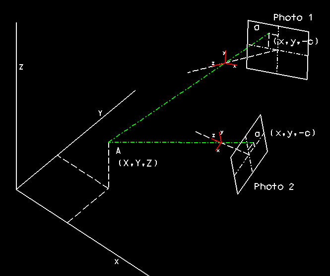

Photogrammetry- What is it?
Civil and Building Engineering, Loughborough University, UK
Photogrammetry is the Science of determining spatial data from photographs. The
traditional application of photogrammetry in the UK has been the production of all
Ordnance Survey maps (1:1250-1:50,000 & derived products such as road atlases) using
vertical aerial photography.

Key advantages of photogrammetry include:
- Non-contact method of measurement.
- Precision is flexible and commensurate with scale.
Significant developments in the last twenty years include:
- The computerisation of the restitution process (i.e. the transformation of image
measurements --> 3D Object Coordinates). This has freed the type of usable photography
from most of the geometric constraints enforced by mechanical and optical limitations of
early plotting instruments. Now ground based, oblique/vertical aerial and even satellite
imagery can be used using analytical photogrammetry. Furthermore, such imagery can
be acquired using a wide range of photographic cameras, including conventional 35mm
cameras.
- The parallel development of silicon based technologies have provided the foundation of
the logical extension to analytical methods, digital photogrammetry. A
scanned/raster/pixel based digital image is used as a means to display and measure the
image coordinates which enables cheaper workstation based hardware to be used. The other
huge advantage is the potential of automating certain aspects of the measurement process,
perhaps best exemplified by the automated extraction of Digital Elevation Models (DEMs)
and orthophotographs offered by some software suppliers.
- The use of 3D Computer Aided Design packages to manipulate and store measured 3D
coordinates has provided photogrammetrists with a powerful tool and a means to enter new
markets.
The increasing need to manage that most basic resource, space, requires tools to
develop 3D CAD models of existing structures and terrain. Photogrammetry can provide that
information.